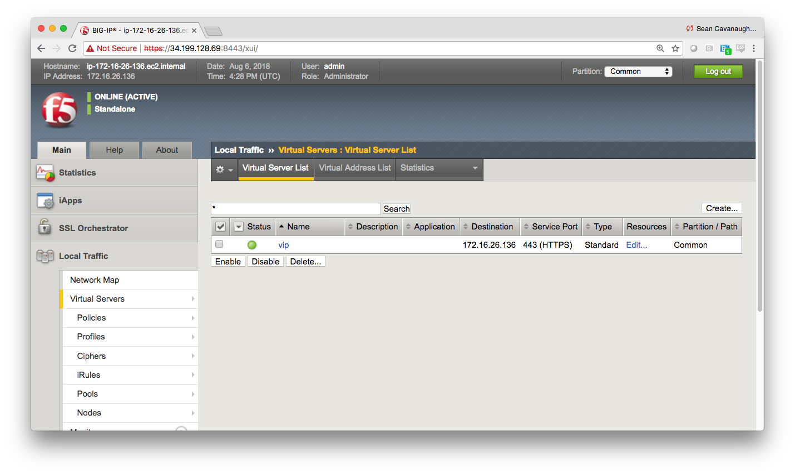
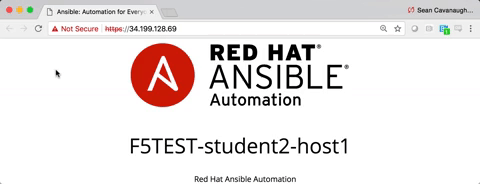

F5 Solutions for Containers > Class 9: Basic BIG-IP Configuration Management with Ansible > Section 1 - Ansible F5 Basic Exercises Source |
Exercise 1.5: Using the bigip_virtual_server module¶
Objective¶
Demonstrate use of the BIG-IP virtual server module to configure a virtual server on the BIG-IP. Virtual server is a combination of IP:Port.
Guide¶
Step 1:¶
Using your text editor of choice create a new file called
bigip-virtual-server.yml.
[centos@ansible ~]$ nano bigip-virtual-server.yml
vimandnanoare available on the control node, as well as Visual Studio and Atom via RDP
Step 2:¶
Ansible playbooks are YAML files. YAML is a structured encoding format that is also extremely human readable (unlike it’s subset - the JSON format).
Enter the following play definition into bigip-virtual-server.yml:
---
- name: BIG-IP SETUP
hosts: lb
connection: local
gather_facts: false
- The
---at the top of the file indicates that this is a YAML file. - The
hosts: f5, indicates the play is run only on the F5 BIG-IP device connection: localtells the Playbook to run locally (rather than SSHing to itself)gather_facts: nodisables facts gathering. We are not using any fact variables for this playbook.
Do not exit the editor yet.
Step 3¶
Next, append the task to above playbook. This task will use the
bigip-virtual-server to configure a virtual server on the BIG-IP
tasks:
- name: ADD VIRTUAL SERVER
bigip_virtual_server:
provider:
server: "{{private_ip}}"
user: "{{ansible_user}}"
password: "{{ansible_ssh_pass}}"
server_port: 8443
validate_certs: no
name: "vip"
destination: "{{destination_ip}}"
port: "443"
enabled_vlans: "all"
all_profiles: ['http','clientssl','oneconnect']
pool: "http_pool"
snat: "Automap"
A play is a list of tasks. Tasks and modules have a 1:1 correlation. Ansible modules are reusable, standalone scripts that can be used by the Ansible API, or by the ansible or ansible-playbook programs. They return information to ansible by printing a JSON string to stdout before exiting.
name: ADD VIRTUAL SERVERis a user defined description that will display in the terminal output.bigip_virtual_server:tells the task which module to use.- The
server: "{{private_ip}}"parameter tells the module to connect to the F5 BIG-IP IP address, which is stored as a variableprivate_ipin inventory - The
provider:parameter is a group of connection details for the BIG-IP. - The
user: "{{ansible_user}}"parameter tells the module the username to login to the F5 BIG-IP device with - The
password: "{{ansible_ssh_pass}}"parameter tells the module the password to login to the F5 BIG-IP device with - The
server_port: 8443parameter tells the module the port to connect to the F5 BIG-IP device with - The
name: "vip"parameter tells the module to create a virtual server named vip - The
destination"parameter tells the module which IP address to assign for the virtual server - The
portparamter tells the module which Port the virtual server will be listening on - The
enabled_vlansparameter tells the module which all vlans the virtual server is enbaled for - The
all_profilesparamter tells the module which all profiles are assigned to the virtuals server - The
poolparameter tells the module which pool is assigned to the virtual server - The
snatparamter tells the module what the Source network address address should be. In this module we are assigning it to be Automap which means the source address on the request that goes to the backend server will be the self-ip address of the BIG-IP - The
validate_certs: "no"parameter tells the module to not validate SSL certificates. This is just used for demonstration purposes since this is a lab.
Save the file and exit out of editor
Step 4¶
Run the playbook - exit back into the command line of the control host and execute the following:
[centos@ansible ~]$ ansible-playbook bigip-virtual-server.yml
Playbook Output¶
[centos@ansible]$ ansible-playbook bigip-virtual-server.yml
PLAY [BIG-IP SETUP]*************************************************************
TASK [ADD VIRTUAL SERVER] ******************************************************
changed: [f5]
PLAY RECAP *********************************************************************
f5 : ok=1 changed=1 unreachable=0 failed=0
Solution¶
The finished Ansible Playbook is provided here for an Answer key. Click
here:
bigip-virtual-server.yml.
Verifying the Solution¶
To see the configured Virtual Server, login to the F5 load balancer with your web browser.
Grab the IP information for the F5 load balancer from the/home/studentX/networking_workshop/lab_inventory/hostsfile, and type it in like so: https://X.X.X.X:8443/
Login information for the BIG-IP: - username: admin - password: provided by instructor defaults to f5ansible
The load balancer virtual server can be found by navigating the menu on the left. Click on Local Traffic. then click on Virtual Server. See the screenshot below: 
Verifying the web servers¶
Each Centos web server actually already has apache running. Exercise 1.1 through 1.5 have successfully setup the load balancer for the pool of web servers. Open up the public IP of the F5 load balancer in your web browser:
This time use port 443 instead of 8443, e.g. https://X.X.X.X:443/
Note
In your environment, go to the f5 component and use the
Virtual Server Test access method to test.
Each time you refresh the host will change between host1 and host2. Here is animation of the host field changing:  >the animation might not work on certain browsers
Alternate Verification Method¶
Instead of using a browser window it is also possible to use the command
line on the Ansible control node. Use the curl command on the
ansible_host to access public IP or private IP address of F5 load
balancer in combination with the --insecure and --silent command
line arguments. Since the entire website is loaded on the command line
it is recommended to | grep for the student number assigned to the
respective workbench. (e.g. student5 would | grep student5)
[studentX@ansible ~]$ curl https://172.16.26.136:443 --insecure --silent | grep studentX
<p>F5TEST-studentX-host1</p>
[studentX@ansible ~]$ curl https://172.16.26.136:443 --insecure --silent | grep studentX
<p>F5TEST-studentX-host2</p>
[studentX@ansible ~]$ curl https://172.16.26.136:443 --insecure --silent | grep studentX
<p>F5TEST-studentX-host1</p>
You have finished this exercise. Click here to return to the lab guide